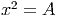
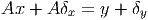
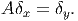

Exercícios finais
E 7.3.21. O valor exato da integral imprópria ∫
01x ln(x)dx é dado por

Aproxime o valor desta integral usando a regra de Simpson para
n = 3,
n = 5 e
n = 7. Como você avalia a qualidade do resultado obtido? Por que
isso acontece.
Resposta. -0.2310491, -0.2452073, - 0.2478649.
♢
E 7.3.22. O valor exato da integral imprópria ∫
0∞e−x2dx é dado por  .
Escreva esta integral como
.
Escreva esta integral como

e aproxime seu valor usando o esquema de trapézios e Simpson para
n = 5,
n = 7 e
n = 9.
E 7.3.23. Estamos interessados em avaliar numericamente a seguinte
integral:

cujo valor com 10 casas decimais corretas é
−.2398117420.
- Aproxime esta integral via Gauss-Legendre com n = 2,n = 3, n = 4,
n = 5, n = 6 e n = 7.
- Use a identidade e aproxime a integral ∫
01 ln(x)
![[sin(x) − x]](main1155x.png) dx numericamente via
Gauss-Legendre com n = 2, n = 3, n = 4, n = 5, n = 6 e n = 7.
dx numericamente via
Gauss-Legendre com n = 2, n = 3, n = 4, n = 5, n = 6 e n = 7.
- Compare os resultados e discuta levando em consideração as respostas às
seguintes perguntas: 1)Qual função é mais bem-comportada na origem?
2)Na segunda formulação, qual porção da solução foi obtida analiticamente
e, portanto, sem erro de truncamento?
Resposta. a)-0.2472261, -0.2416451, -0.2404596, -0.2400968, -0.2399563, -0.2398928. b)-0.2393727, -0.2397994,
-0.2398104, -0.2398115, -0.2398117, -0.2398117.
♢
E 7.3.24. Considere o problema de calcular numericamente a integral
I = ∫
−11f(x)dx quando f(x) =  .
.
- O que acontece quando se aplica diretamente a quadratura gaussiana
com um número impar de abscissas?
- Calcule o valor aproximado por quadratura gaussiana com n = 2,
n = 4, n = 6 e n = 8.
- Calcule o valor aproximado da integral removendo a singularidade
e aplicando quadratura gaussiana com n = 2, n = 4, n = 6 e n = 8.
- Calcule o valor aproximado da integral removendo a singularidade,
considerando a paridade da função e aplicando quadratura gaussiana com n = 2, n = 4, n = 6 e n = 8.
- Expandindo a função cos(x) em série de Taylor, truncando a série
depois do n-ésimo termos não nulo e integrando analiticamente.
- Aproximando a função cos(x) pelo polinômio de Taylor de grau 4 dado
por
 e escrevendo
e escrevendo
Resposta.
|
|
|
|
|
|
| n | b | c | d | e | f |
|
|
|
|
|
|
| 2 | 2.205508 | 3.5733599 | 3.6191866 | 3.6185185 | 3.618146 |
|
|
|
|
|
|
| 4 | 2.5973554 | 3.6107456 | 3.6181465 | 3.6180970 | 3.6180970 |
|
|
|
|
|
|
| 6 | 2.7732372 | 3.6153069 | 3.6181044 | 3.6180970 | 3.6180970 |
|
|
|
|
|
|
| 8 | 2.880694 | 3.6166953 | 3.6180989 | 3.6180970 | 3.6180970 |
|
|
|
|
|
|
| |
Solução do item e: Como
 temos
temos
 Logo,
podemos integrar Solução do item f)
♢
Logo,
podemos integrar Solução do item f)
♢
E 7.3.26. Calcule as integrais ∫
01 dx e ∫
01
dx e ∫
01 dx usando
procedimentos analíticos e numéricos.
dx usando
procedimentos analíticos e numéricos.
E 7.3.27. Use a técnica de integração por partes para obter a seguinte
identidade envolvendo integrais impróprias:

Aplique as técnicas estudadas para aproximar o valor de I e explique por
que a integral da direita é mais bem comportada.
E 7.3.28. Resolva a equação

com 5 dígitos significativos.
E 7.3.29 (title=Ciência dos materiais). O calor específico (molar) de um
sólido pode ser aproximado pela teoria de Debye usando a seguinte expressão

onde
N é a constante de Avogrado dado por
N = 6.022 × 1023 e
k
B é a constante
de Boltzmann dada por
kB = 1.38 × 10−23.
T
D é temperatura de Debye do
sólido.
- Calcule o calor específico do ferro em quando T = 200K, T = 300K e
T = 400K supondo TD = 470K.
- Calcule a temperatura de Debye de um sólido cujo calor específico a
temperatura de 300K é 24J∕K∕mol. Dica: aproxime a integral por um
esquema numérico com um número fixo de pontos.
- Melhore sua cultura geral: A lei de Dulong-Petit para o calor específico
dos sólidos precede a teoria de Debye. Verifique que a equação de Debye
é consistente com Dulong-Petit, ou seja:
 Dica: use ey ≈ 1 + y quando y ≈ 0
Resposta. a)19.2, 22.1, 23.3 b)513.67K
♢
![∫ 1 ∫ 1 ∫ 1
ln (x )sin(x)dx = ln(x)xdx + ln(x )[sin(x) − x]dx
0 0 0
( x2 x2) ||1 ∫ 1
= ---ln x − --- || + ln(x) [sin(x) − x]dx
2 4 |0 0
1 ∫ 1
= − 4-+ 0 ln(x)[sin (x) − x]dx](main1154x.png)


 dx
dx
 dx
dx
 dx
dx